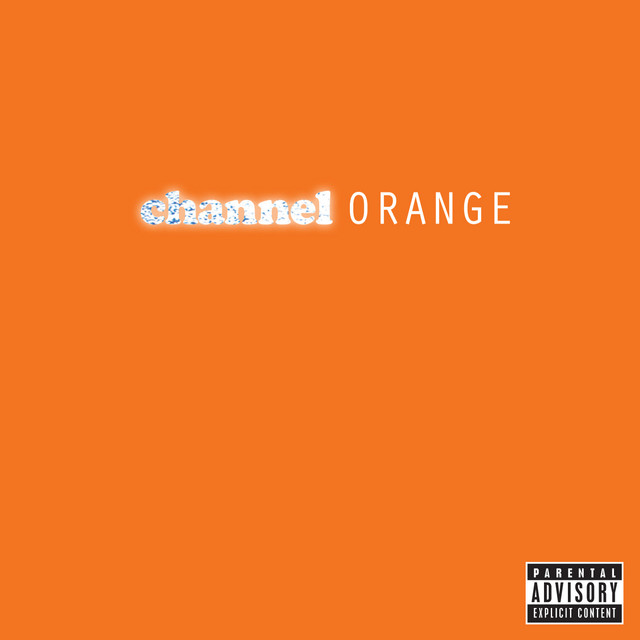
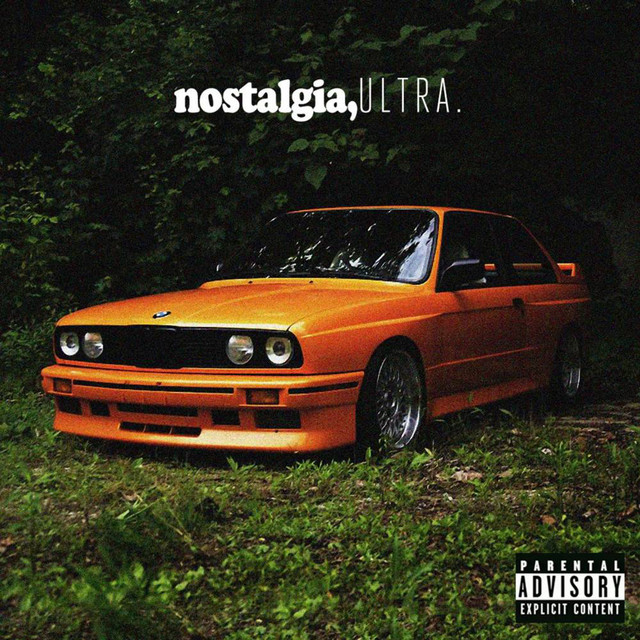

A starting-point list and album comparison table

Frank Ocean's discography traces a clear evolution in alternative R&B starting with a raw, mixtape-era sound and building toward more experimental, fully produced studio albums. The three projects below marks the key stages of that evolution.
Nostalgia, Ultra introduced his songwriting style to the world, Channel Orange turned that style into a widely acclaimed debut album, and Blonde pushed the sound into looser, more abstract territory years later.
The table further down compares the three releases side by side, so you can see how the sound and format changed from project to project.



| Projects | Type | Year | Standout Track |
|---|---|---|---|
| Channel Orange | Studio Album | 2012 | Thinkin Bout You |
| Blonde | Studio Album | 2016 | Nights |
| Nostalgia, Ultra | Mixtape | 2011 | Novacane |